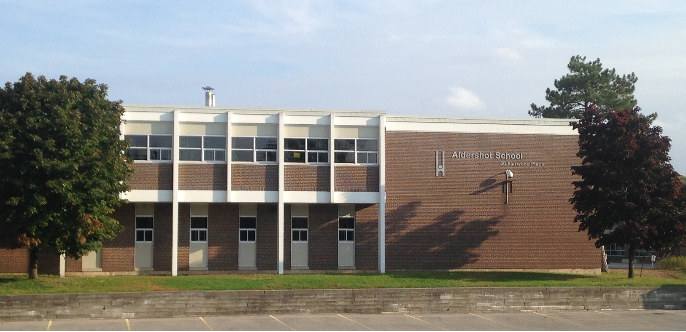
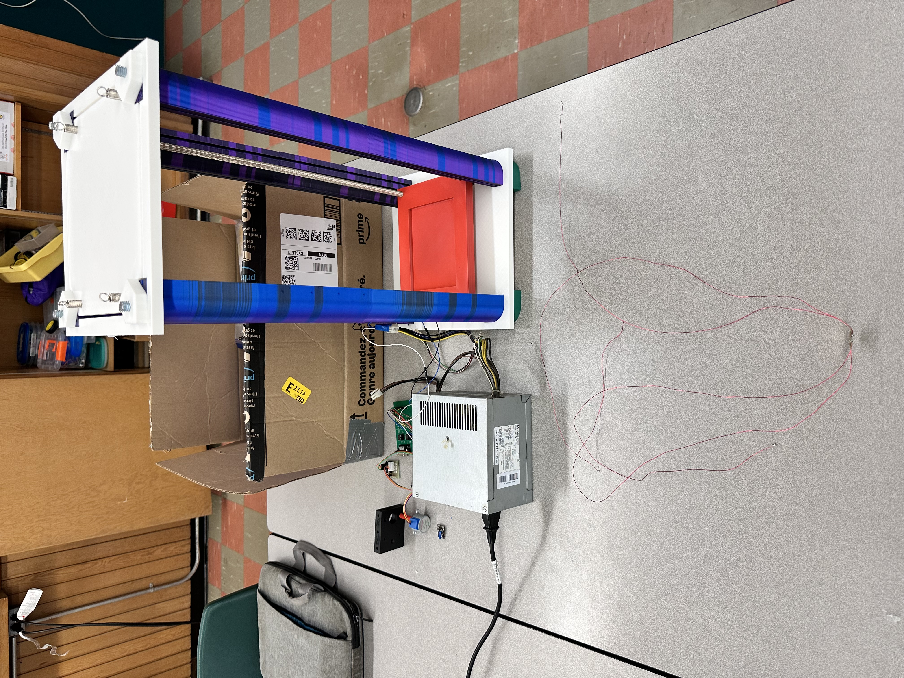
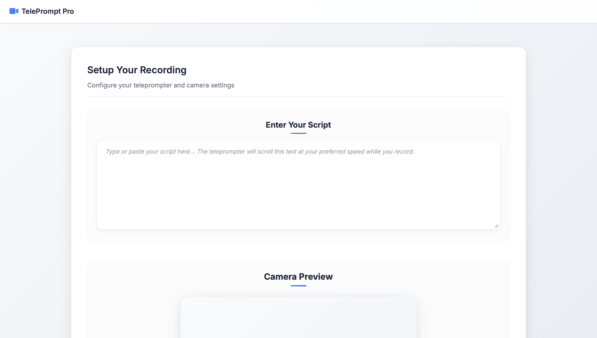

University September 2025 - June 2030 University of Toronto Bachelor of Applied Science Computer Engineering
The University of Toronto is home to students from across Canada and around the world, drawn by its reputation for academic excellence and research. Along with me, many students come from diverse cities, backgrounds, and experiences to take part in its programs. UofT offers opportunities that span various realms including science, engineering, arts, and beyond, encouraging students to apply their knowledge through research, collaboration, and projects. I chose the University of Toronto because of my strong interest in technology and my aspiration to pursue computer engineering in the future.

High School September 2021 - June 2025 Aldershot High School Ontario Secondary School Diploma I-STEM Program
Aldershot High School is home to students from all over the region due to the famous I-STEM program. Along with me, many students travel from Burlington, Oakville, Milton, and Hamilton to come and attend the program. The I-STEM program encompasses all areas of innovation, science, technology, engineering, and math and helps incorporate them into projects for us to do as a school to benefit people or the community. I have taken the I-STEM program due to my interest in technology and desire to become an engineer in the future.
Work Experience
Kumon Assistant June 2021 - August 2025 Kumon Assistant Kumon 2525 Old Bronte Rd Unit 170
Worked at the Kumon Centre for over four years, where I supported students by marking their worksheets, entering results into a digital system to log progress, and providing individualized guidance to strengthen their understanding of math and reading. I assisted learners of various ages and skill levels through exercises, offered one-on-one support to reinforce key concepts, and maintained an organized, welcoming environment to foster effective learning. In addition, I regularly communicated with parents, answering questions and providing updates to ensure trust and transparency. Through this long-term experience, I developed strong communication, teaching, and organizational skills while also gaining technical proficiency in managing digital record-keeping systems. Working in a fast-paced, high-volume environment strengthened my time management and problem-solving abilities, while my years of service reflect reliability, dedication, and a commitment to supporting student growth.
Volunteer Experience
Leader in Training Program
July 2023 - August 2023
McMaster Venture Academy
122 Hours
Kumon Helper
March 2021 - January 2023
Kumon
85 Hours
Online Programs
July 2021 - November 2022
Canadian Caribbean Association of Halton
“Becoming a Leader”
“Community Policing, Safety and Well-Being”
“Preparing for Success”
“Becoming Financially Fit” Programs
20 Hours
Energy Audit
October 2022 - November 2022
Grades of Green
10 Hours
Building an Edible Garden
May 2024 - July 2024
Grades of Green
50 Hours
Educational Software Development
July 2024 - August 2024
Fondation STaBL Foundation
10 Hours
Projects
High Park Development Project University of Toronto Computer EngineeringAPS111
Designed a park-wide, accessibility-focused wayfinding system while acting as project facilitator, coordinating a team of 6 and producing formal engineering documentation including project requirements and conceptual design specifications.
Neuroimaging Data Analysis Project University of Toronto Computer EngineeringMAT188
Analyzed high-dimensional MEG neuroimaging data (200+ brain regions, 500 time points) in MATLAB using matrix-based workflows, applying 3D spatial transformations, PCA, correlation analysis, and 3D visualization to extract and interpret meaningful neural activity patterns.

DIY Scanning Tunneling Microscope Aldershot High School Gr. 12 Computer EngineeringTEJ4MQ
Designed and assembled a DIY Scanning Tunneling Microscope with a team of 3 under a $700 budget by soldering custom PCBs, assembling an isolation chamber, and implementing control functionality using Python.

Teleprompter Application Personal Project
Developed a web-based teleprompter application using HTML, CSS, and JavaScript that allows users to input scripts and display auto-scrolling text, focusing on responsive layout, smooth scrolling behavior, and user-controlled playback features.
ML Stock Market Predictor Personal Project
Developed an LSTM-based stock market analysis model in Python using TensorFlow, performing time-series preprocessing and visualization, followed by a technical evaluation of model performance.
Achievements
Governor General Award 2025
University of Toronto Scholarship for Exceptional Academic Achievement
Edward S. Rogers Sr. Admission Scholarship
2025 I-THINK Scholarship Recipient
RBC Scholarship for Children of Employees (Canada)
Ranking #1 among 1537 Students in Grade 10 throughout Canada
Skills
Programming: Python, HTML, CSS, PHP, JavaScript, C++ (Arduino), Elm, Swift (basic)
Hardware: Soldering, PCB Design, PC Assembly, Arduino
Tools: MATLAB, NumPy, Pandas, Matplotlib, TensorFlow, 3D Modeling (Tinkercad)
Platforms: macOS, Windows, Google Workspace, Microsoft Office